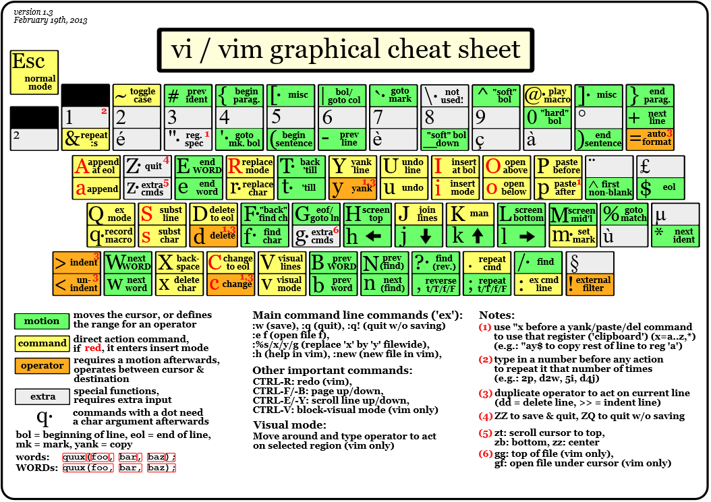

Vim skills¶

代码折叠¶
vim 提供 6中折叠方式
manual 手工定义折叠
indent 更多的缩进表示更高级别的折叠
expr 用表达式来定义折叠
syntax 用语法高亮来定义折叠
diff 对没有更改的文本进行折叠
marker 对文中的标志折叠
可用选项 ‘foldmethod’ 来设定折叠方式：set fdm=syntax
- 折叠打开与折合
zc 折叠
zC 对所在范围内所有嵌套的折叠点进行折叠
zo 展开折叠
zO 对所在范围内所有嵌套的折叠点展开
[z 到当前打开的折叠的开始处。
]z 到当前打开的折叠的末尾处。
zj 向下移动。到达下一个折叠的开始处。关闭的折叠也被计入。
zk 向上移动到前一折叠的结束处。关闭的折叠也被计入。
My .vimrc file¶
"set nobackup " 关闭自动备份功能，backup自动备份
set scrolloff=5 " 光标移动到buffer的顶部和底部时保持*行距离
set nu
colorscheme desert
syntax enable
syntax on
set nowrap
set expandtab
set shiftwidth=4
set tabstop=4
let fortran_fold=1
set foldmethod=syntax
set foldlevelstart=10
set mouse=a
set paste